| Surface | Long wave Emissivity epsilon_ LW |
|---|---|
| Soil | 0.90 – 0.98 |
| Grass | 0.90 – 0.95 |
| Crops | 0.90 – 0.99 |
| Forests | 0.97 – 0.99 |
| Water | 0.92 – 0.97 |
| Iron | 0.13 – 0.28 |
Longwave Radiation
Peak emissions band of the Earth-Climate System
Learning Objectives
- See how radiation laws apply to long-wave radiative exchange and how long-wave radiation can interact with surfaces.
- Explain how we can calculate longwave outgoing radiation, and how it relates to surface emissivity.
- Know how we can estimate / model longwave incoming radiation and the emissivity of the atmosphere.
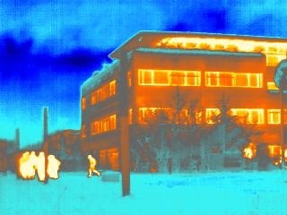
What is ‘Longwave’ radiation?
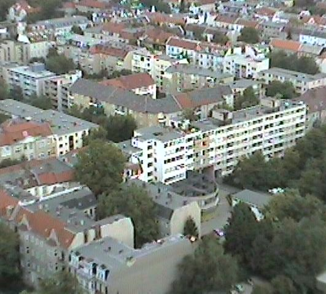

Measuring Long-wave Radiation
Numerous instruments can measure long-wave radiation received in a particular field of view (FOV), within a particular band, and/or with a particular spatial resolution.
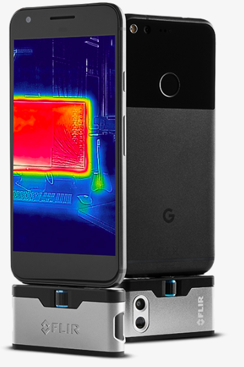
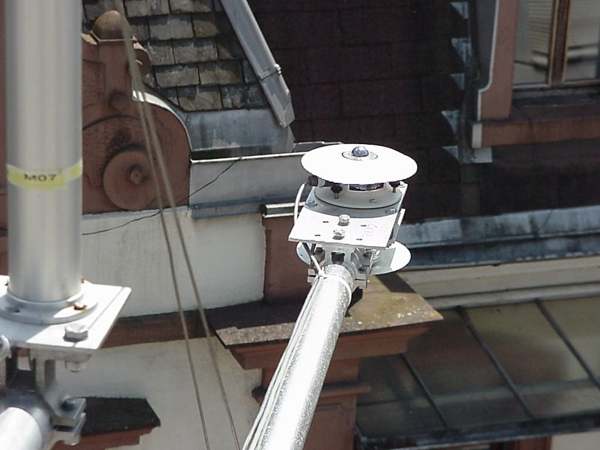
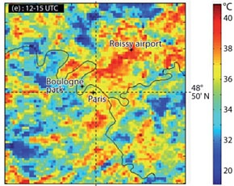
Stefan-Boltzmann Law: Grey Body
Natural objects (called grey bodies) are not full radiators. Their emittance is given by adapting the Stefan-Boltzman law:
\[ E_g = \epsilon\sigma_b T^4 \qquad(1)\]
where \(\sigma = 5.67 * 10^-8\)
- where \(\epsilon\) is their surface emissivity. Emissivity is the ratio of the actual emission to that of a blackbody (i.e. \(\epsilon\) = 1.0).
- This law is the basis of remote sensing in the TIR
Emittance (W m-2) of Vancouver seen from ASTER satellite Sept 3 2010 12:24 PDT
Atmospheric Window(s)
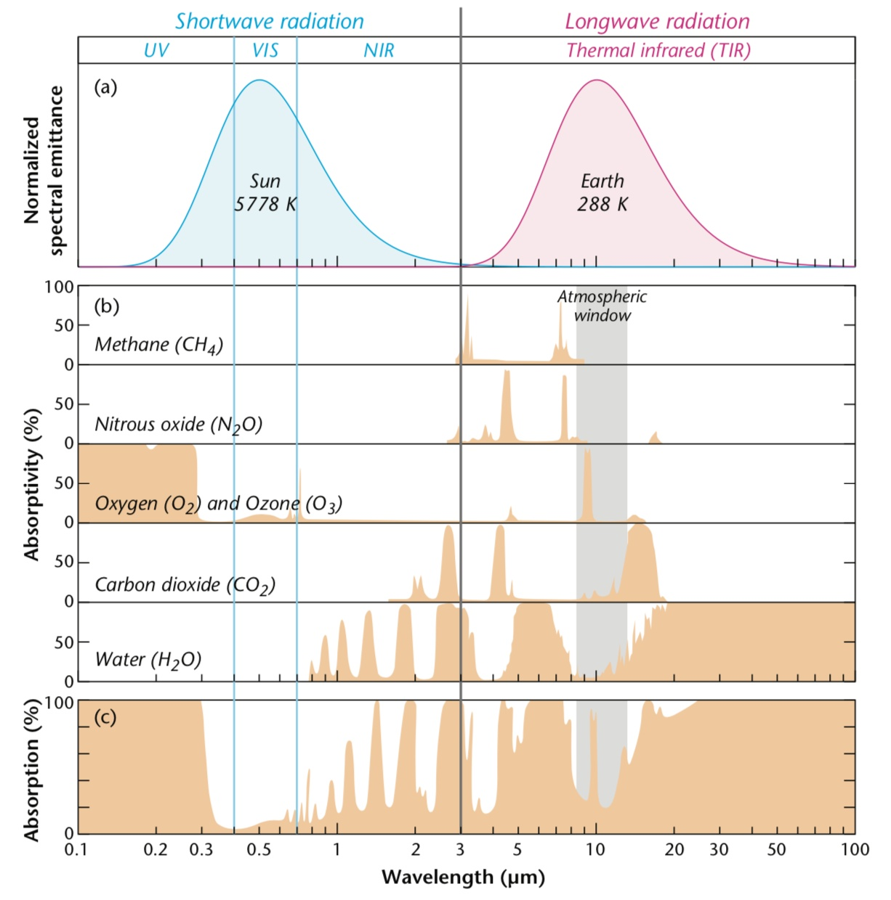Kirchhoff’s law
\[ \zeta_{\lambda} = \epsilon_{\lambda} \qquad(2)\]
- Assuming no transmission the absorptivity of a body (\(\zeta_\lambda\)) equals its emissivity (\(\epsilon_\lambda\)) at a given wavelength.
- A good absorber is a good emitter
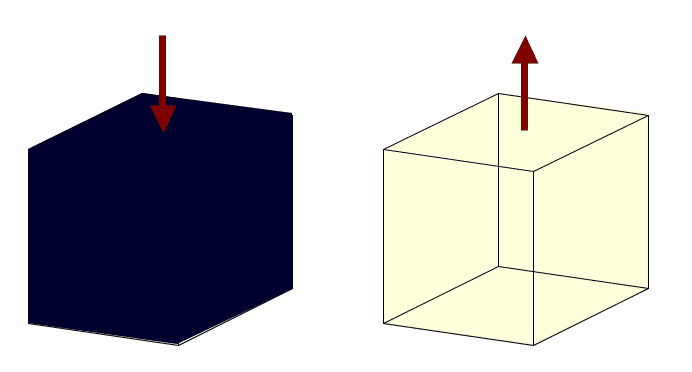
Kirchhoff’s Law (iClicker)
Plants are good absorbers of \(SW\) radiation, so why don’t they emit just as much \(SW\) as they absorb?
- A: They aren’t hot enough (Stefan-Boltzmann)
- B: The do emit \(SW\), we call this Albedo
Kirchhoff’s Law
Kirchhoff’s law only applies if the wavelength considered is the same – do not mix them together.
- Kirchhoff’s law only has relevance to long-wave exchange in climatology.
- The law does not apply to fluorescent objects, which can absorb energy at a given a wavelength and release it at another one.
Mass-Radiation Interactions
\[ \zeta_\lambda + \Psi_\lambda + \alpha_\lambda = 1 \qquad(3)\]
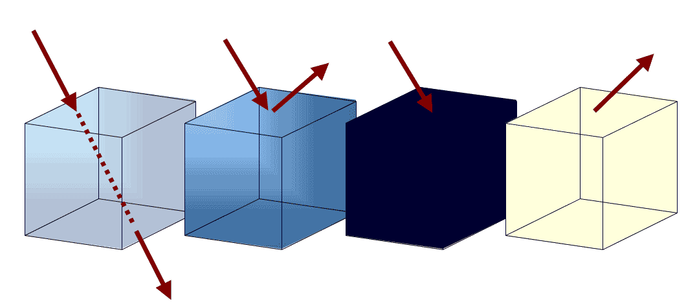Transmission (\(\Psi_\lambda\)), Reflection (\(\alpha_\lambda\)), Absorption (\(\zeta_\lambda\)), Emission (\(\epsilon_\lambda\))
Long-wave Reflection
Most (solid) surfaces are opaque to long-wave (i.e., \(\Psi_{LW} \approx 0\)), so we can simplify our radiation conservation equation for \(LW\): \[ \zeta_{LW} + \alpha_{LW} = 1 \qquad(4)\]
\[ \alpha_{LW} = 1 - \epsilon_{LW} \qquad(5)\]
Long-wave Reflection (iClicker)
Which surface would you expect to have the highest \(\alpha_{LW}\)?
- A Peat (organic soil)
- B Wood
- C Steel (Iron-carbon alloy)
- D Wheat
- E A Cow
| Surface | Long wave Emissivity epsilon_ LW |
|---|---|
| Soil | 0.90 – 0.98 |
| Grass | 0.90 – 0.95 |
| Crops | 0.90 – 0.99 |
| Forests | 0.97 – 0.99 |
| Water | 0.92 – 0.97 |
| Iron | 0.13 – 0.28 |
Long-wave Reflection
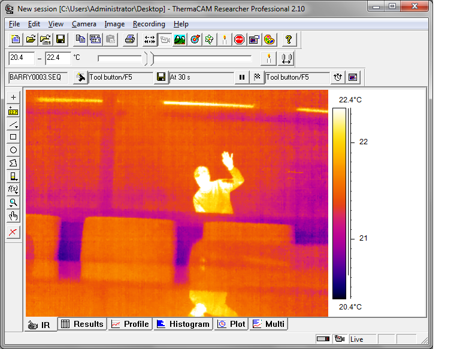Glass transmits a substantial fraction of visible light, but is relatively opaque to \(LW\)
Net Long-wave Flux Density
The net long-wave radiation flux density (\(LW^*\)) at the surface is the difference between the input from the atmosphere above (\(LW\downarrow\)) and the output surface (\(LW\uparrow\)).
\[ LW^* = LW\downarrow - LW\uparrow \qquad(6)\]
- Surface output includes both emissions from surface and reflected \(LW\downarrow\)
- Differs from \(SW*= SW\downarrow - SW\uparrow\)
- \(SW\uparrow\) is only reflected \(SW\), earth doesn’t emit \(SW\)!
Long-Long-wave Flux Density
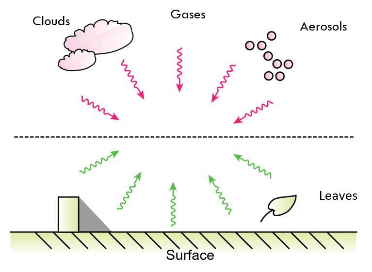Net Long-wave Flux Density
We can re-formulate the previous equation in terms of the Stefan-Boltzmann Law:
\[ LW^* = LW\downarrow - \epsilon_{LW}\sigma_b T_s^4 -(1-\epsilon_{LW})LW\downarrow \qquad(7)\]
- How is this equivalent to Equation 6
- Stefan-Boltzman gives us emissions from a surface of temperature \(T_s\) with a long-wave emissivity of \(\epsilon_{LW}\)
- \((1-\epsilon_{LW})\) gives us reflectivity
Estimating Surface Emissivity
We can compare the apparent surface temperature \(T_r\), which assumes the surface is a black body: \[ \sigma T_r^4 = \epsilon_{s} T_s^4 + (1-\epsilon_{s})LW_{\downarrow} \qquad(8)\]
In reality, we have both emission and reflection. We can re-arrange to isolate \(T_s\) \[ T_s = [\frac{\sigma T_r^4-(1-\epsilon_{s})LW_{\downarrow}}{\epsilon_{s}\sigma}] \qquad(9)\]
then substitute \(sigma T_k^4\) (\(T_k\) = apparent sky temperature) and re-arrange again: \[ \epsilon_{s} = \frac{T_r^4-T_k^4}{T_s^4-T_k^4} \qquad(10)\]
Sky Temperature
\[ LW_\downarrow = \epsilon_{sky} \sigma T_{sky}^4 \qquad(11)\]
Apparent sky temperature is calculated by setting \(\epsilon{sky} = 1\) \[ LW_\downarrow = \sigma T_{k}^4 \qquad(12)\]
Calculating \(LW_\downarrow\)
- Screen level observations are typically available from regular climate stations for air temperature (\(T_a\)) and sometimes vapour pressure (\(P_v\)) but not \(LW_\downarrow\)
- If we are interested in estimating \(LW_\downarrow\) across full long-wave range (3 to 100 µm) we need a bulk value of \(\epsilon_a\) for both cloudless and cloudy cases.
- Several equations are available to estimate \(\epsilon_a\) from screen-level \(T_a\) and \(P_v\).
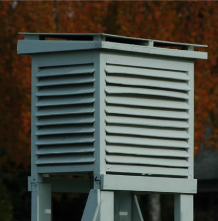
Calculating \(LW_\downarrow\) - How to estimate \(\epsilon_a\)
- Using \(T_a\) and \(P_v\) to estimate \(\epsilon_a\) works because:
- \(T_a\) and \(P_v\) are the main controls that change in the atmosphere
- Variations in CO2, O3 and other greenhouse gases are small.
- \(T_a\) and \(P_v\) are largest and show their greatest variation near the ground. Approximately 50% of \(LW_\downarrow\) originates from 0 to 100m.
Calculating \(LW_\downarrow\) (Prata 1996)
\[ \epsilon_a = [1-(1+zeta)\exp{-(a+b\zeta)^{0.5}}] \qquad(13)\]
where a = 1.2, b=3.0, and \(\zeta = 46.5\frac{P_v}{T_a}\) with \(T_a\) in Kelvin and \(P_v\) in hPa.
where you can calculate \(P_v\) from RH as:
\[ RH=\frac{P_v}{P_v^*} \qquad(14)\]
and approximate \(P_v^*\) using the Tetens equation:
\[ P_v^* = 6.112\exp{17.62\frac{T_a}{243.12+T_a}} \qquad(15)\]
Note that \(T_a\) must be in \(C^\circ\) for this approximation. It will give \(P_v^*\) in hPa.
Calculating \(LW_\downarrow\) (iClicker)
At 15:00, February 2nd, \(T_a = 9 ^\circ\) and \(RH = 80%\), what was \(LW_\downarrow\)?
import numpy as np
class get_epsilon_a():
def __init__(self,T_a,RH):
if T_a < 100:
self.T_a = T_a
self.T_ak = T_a+273.15
else:
self.T_ak=T_a
self.T_a=T_a-273.15
if RH>1:
self.RH=RH*.01
else:
self.RH=RH
self.Prata()
def Prata(self):
self.Pv_from_RH()
a = 1.2
b = 3
zeta = 46.5*(self.P_v/self.T_ak)
self.epsilon_a = 1-(1+zeta)*np.exp(-(a+b*zeta)**0.5)
def Pv_from_RH(self):
P_v_star = 6.112*np.exp(17.62*self.T_a/(243.12+self.T_a))
self.P_v = self.RH*P_v_star
e = get_epsilon_a(9,80)
e.epsilon_a0.7709475025549156- A 0.77
- B 0.88
- C 0.66
- D 0.55
- E 0.99
Effects of Temperature and Humidity (iClicker)
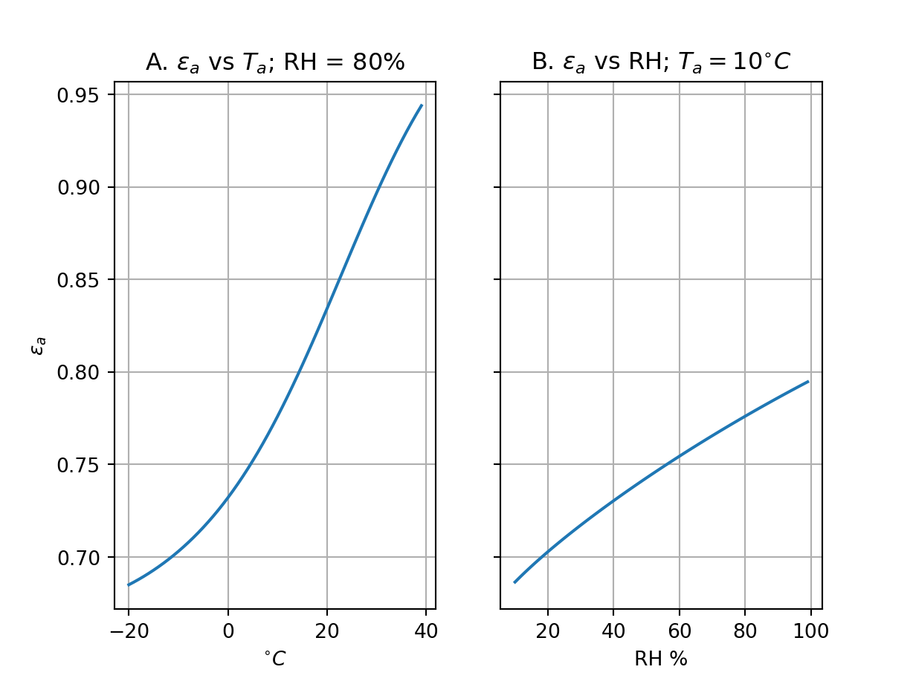
Which property has a stronger effect?
- A \(T_a\)
- B \(RH\)
UBC Energy Balance Station “Westham Island” (Photo: A. Christen)
Diurnal Course - Clear vs Cloudy Sky
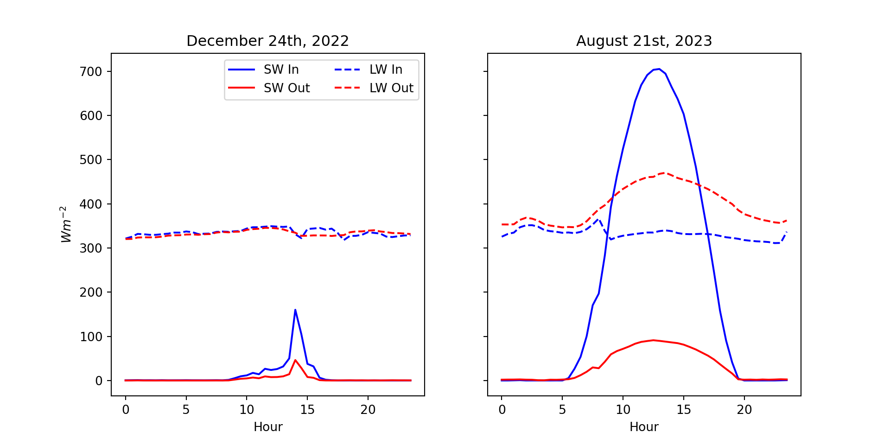Effect of Clouds on Longwave Irradiance
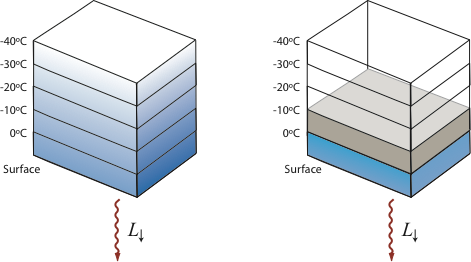With a clear-sky, \(LW_\downarrow\) originates from all layers of the atmosphere, because the atmosphere is partly transparent (‘atmospheric window’ open). With clouds \(LW_\downarrow\) originates from the cloud base and the atmosphere below the cloud, because the cloud is opaque to long wave (‘atmospheric window’ closed).
Monthly totals of \(LW_\downarrow\) & \(LW_\uparrow\) at CA-DBB
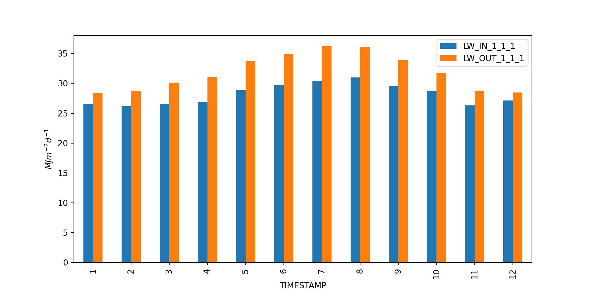‘Fingerprint’ of \(LW_\downarrow\) and \(LW_\uparrow\) measured in Vancouver
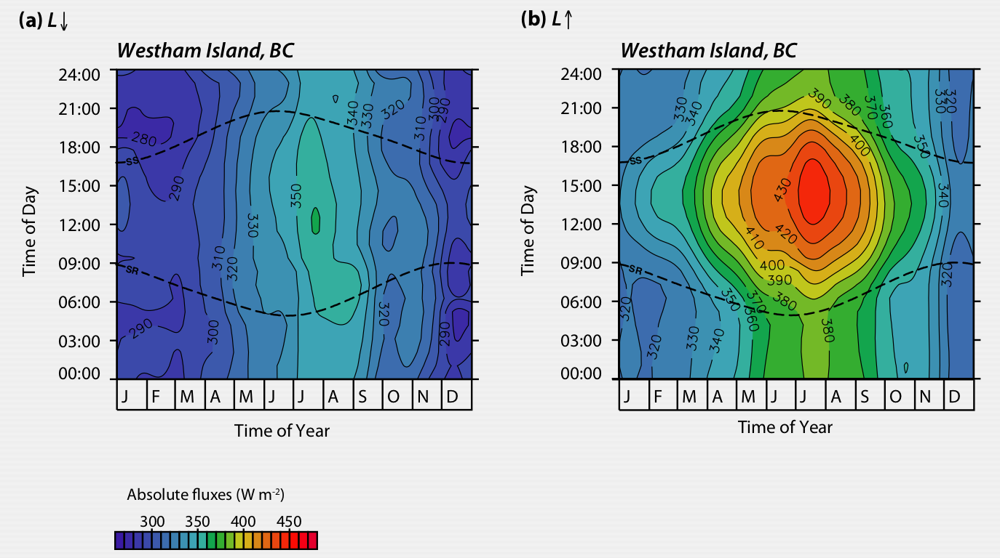Take Home Points
- Radiation laws apply the same way to the longwave part of the spectrum - but Kirchhoff’s law and the concept of emissivity become relevant.
- The net-long wave radiation is driven by the difference in apparent sky and surface temperatures and hence clouds and thermal surface properties are controlling radiative exchange in the long-wave.